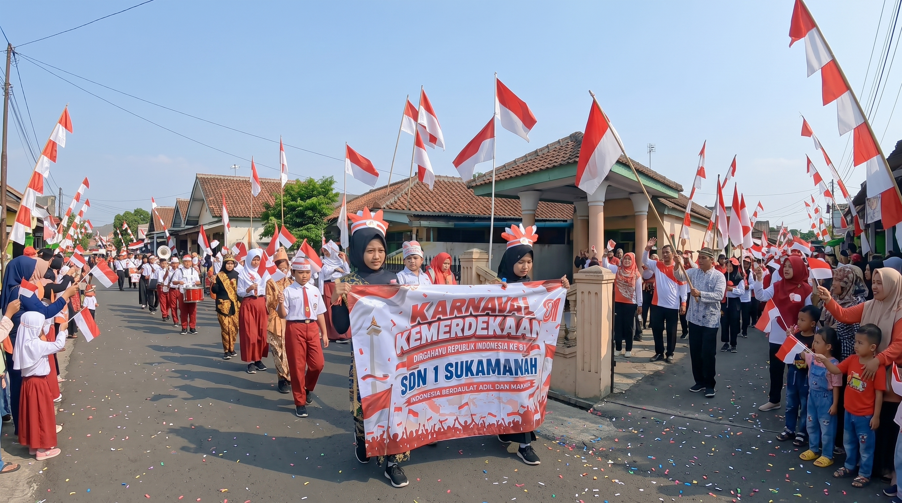
Dalam rangka memperingati Hari Ulang Tahun Kemerdekaan Republik Indonesia ke-81 Tahun 2026, SDN 1 Sukamanah turut menyemarakkan momentum bersejarah tersebut melalui kegiatan yang penuh keceriaan, kebersamaan dan semangat nasionalisme.
Salah satu kegiatan yang menjadi perhatian dan berlangsung meriah adalah Karnaval Kemerdekaan. Kegiatan ini diikuti oleh peserta didik bersama para guru dan warga sekolah dengan mengenakan berbagai kostum serta atribut bernuansa merah putih.
Suasana semakin semarak dengan berbagai pernak-pernik khas kemerdekaan. Bendera Merah Putih, hiasan, atribut perjuangan dan berbagai kreasi peserta membuat kegiatan karnaval terlihat penuh warna dan keceriaan.
Para peserta mengikuti kegiatan dengan penuh antusias. Senyum dan semangat tampak menghiasi wajah para siswa sepanjang kegiatan berlangsung. Kegiatan ini juga menjadi kesempatan bagi peserta didik untuk menampilkan kreativitas sekaligus belajar mengenai arti penting kemerdekaan dan persatuan.
Dengan semangat persatuan dan kebersamaan, seluruh warga SDN 1 Sukamanah bersama-sama memeriahkan HUT Kemerdekaan Republik Indonesia ke-81.
Merah putih berkibar, kreativitas siswa bermunculan, dan suasana kebersamaan menjadikan perayaan kemerdekaan semakin berkesan.
Dokumentasi video kegiatan Karnaval HUT Kemerdekaan RI ke-81 SDN 1 Sukamanah.
Melalui kegiatan perayaan HUT Kemerdekaan, SDN 1 Sukamanah tidak hanya menghadirkan hiburan dan kegembiraan, tetapi juga berupaya menanamkan nilai nasionalisme kepada peserta didik.
Semangat gotong royong, persatuan, kebersamaan, kreativitas dan rasa cinta terhadap tanah air menjadi bagian penting dari kegiatan tersebut.
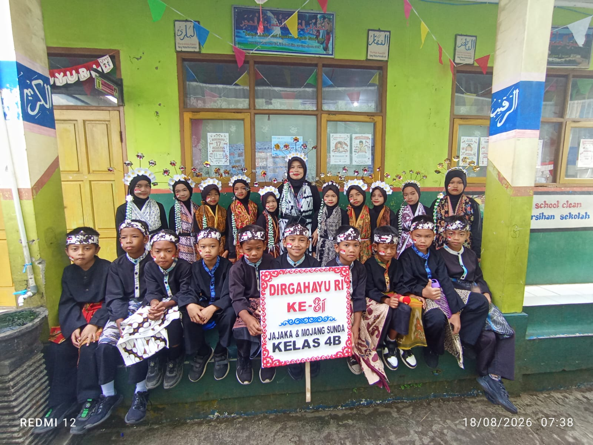
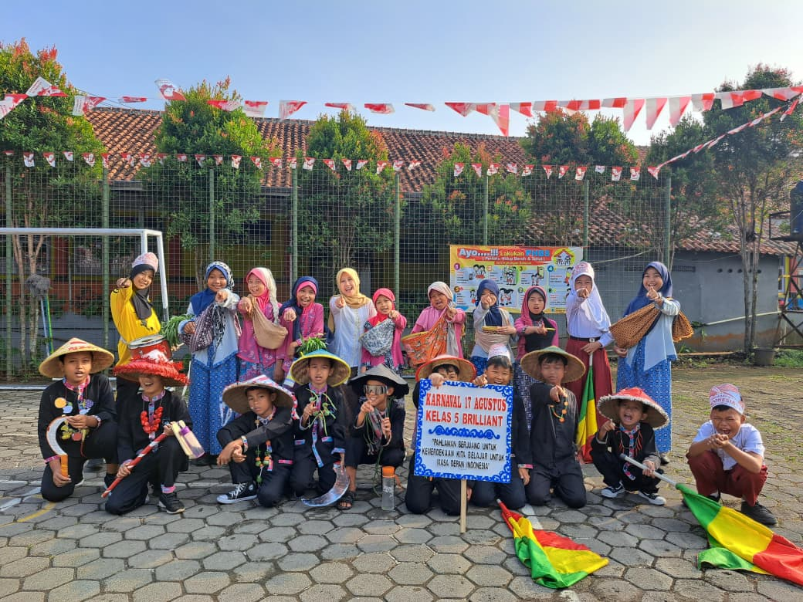
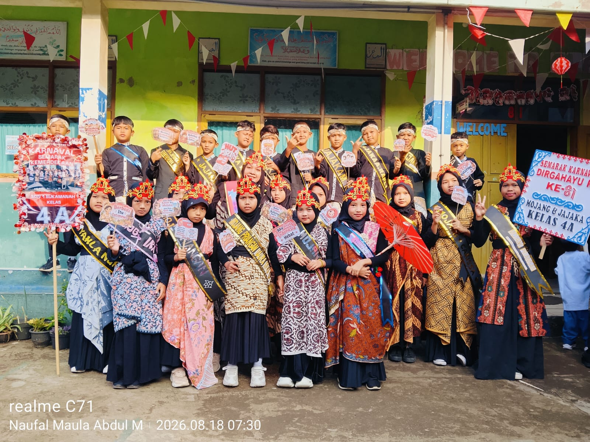
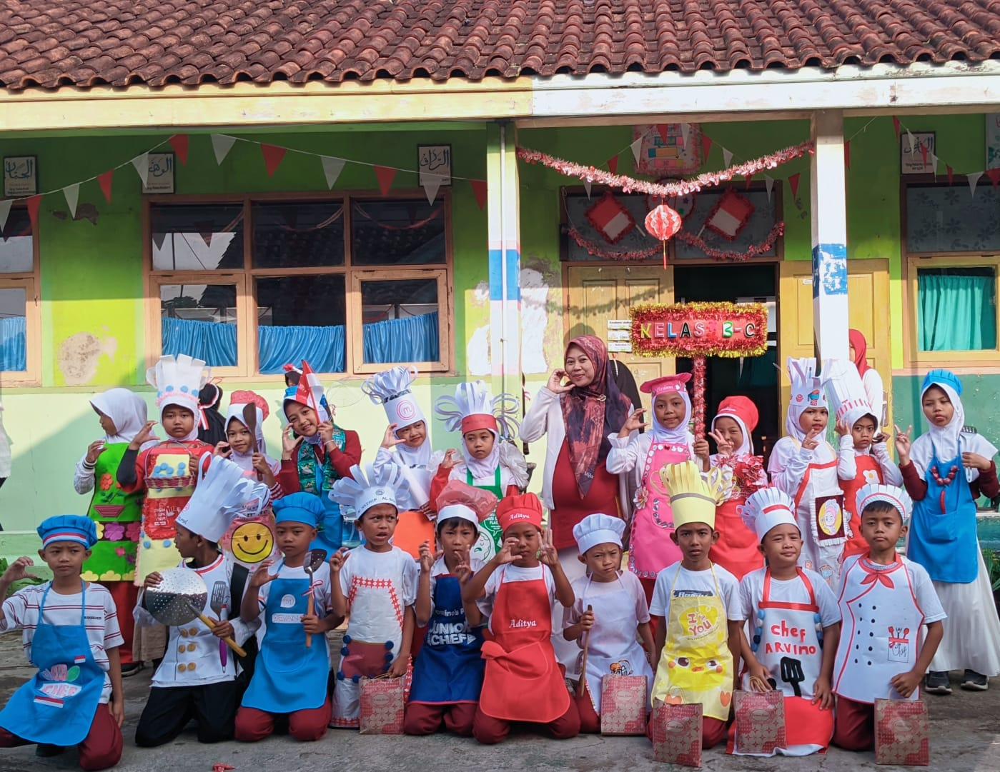
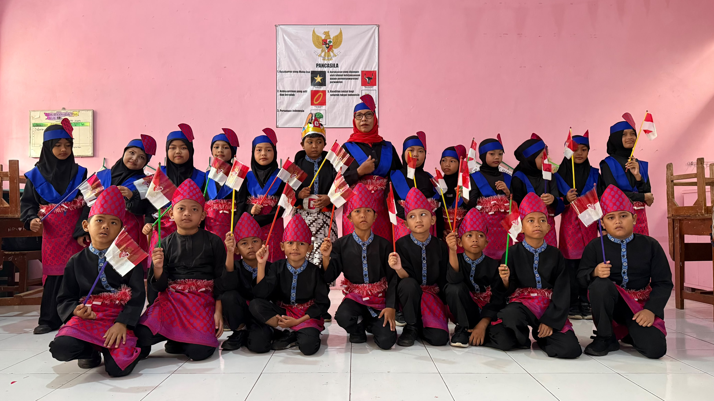
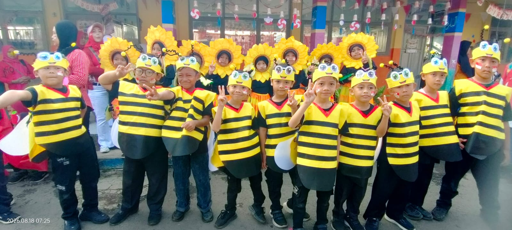
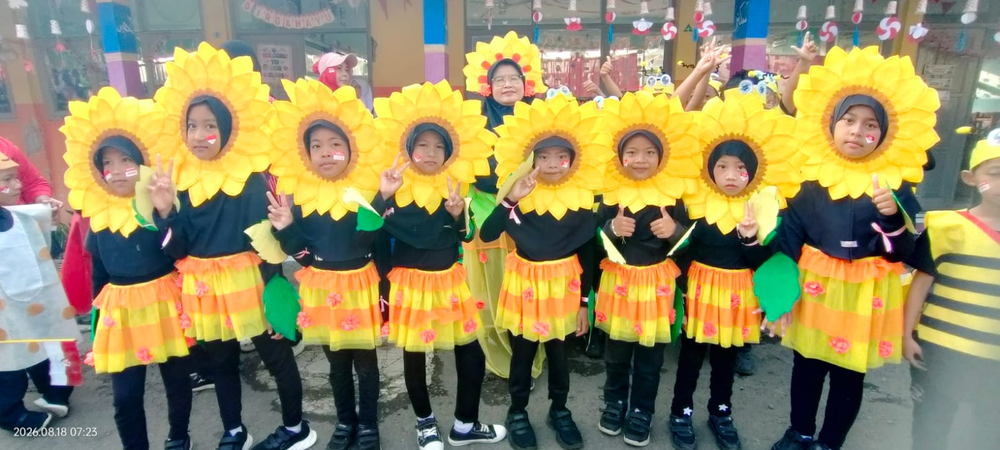
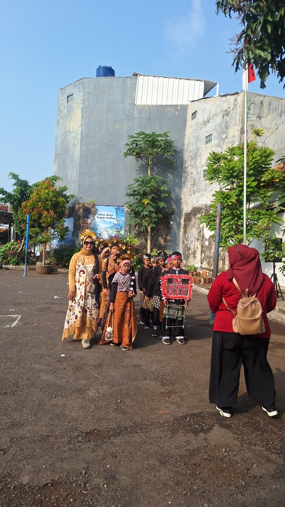
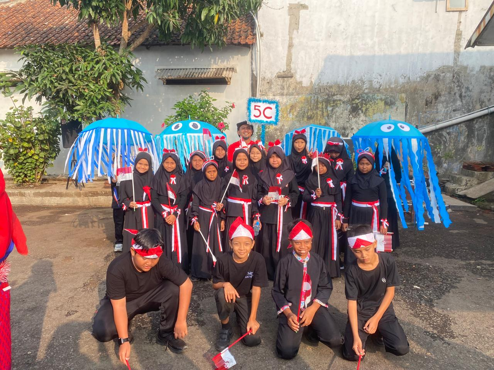
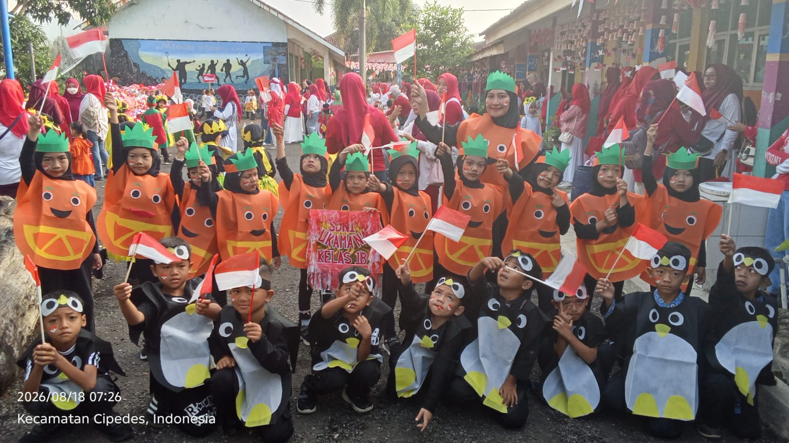
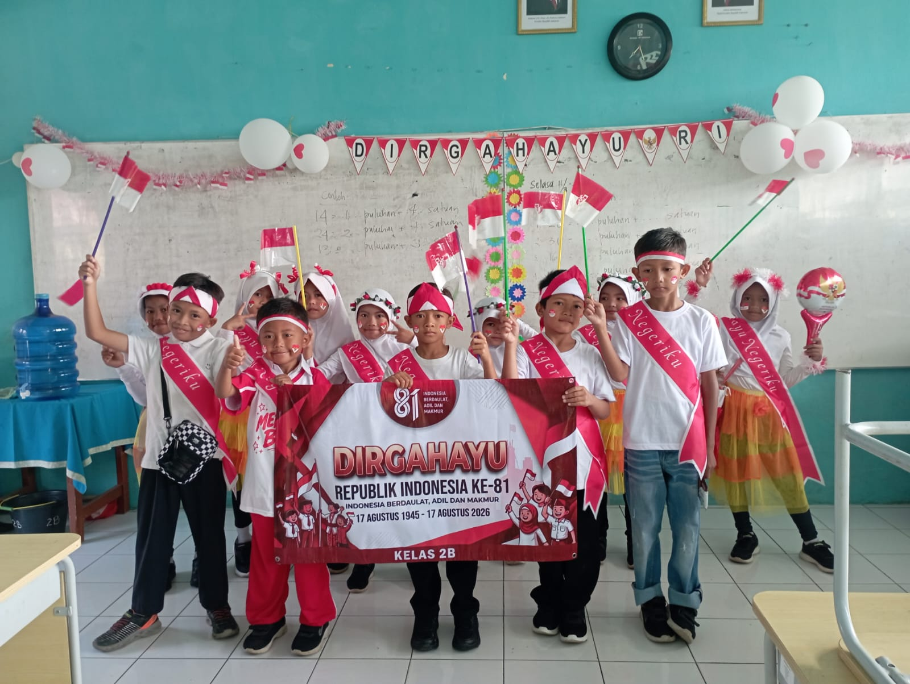
Dengan semangat kebersamaan, mari kita terus tumbuhkan rasa cinta tanah air dan semangat untuk belajar demi Indonesia yang lebih baik.
SDN 1 Sukamanah